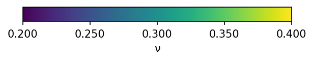
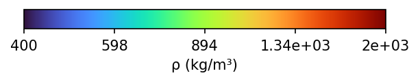
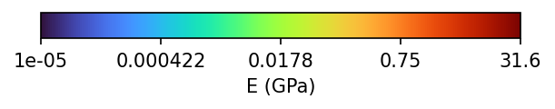

Shared 4D state
One scene state links reconstruction, video generation, and deformable simulation.
Anonymous submission
Deformable Simulation-Ready 4D World Modeling
from Monocular Videos
Overview
PhysVerse turns monocular video into a 4D scene state with geometry and dense material maps, then uses that state for future video prediction and soft-body MPM.
One scene state links reconstruction, video generation, and deformable simulation.
A Physics head predicts Young's modulus, Poisson's ratio, and density with geometry in a single pass.
The same depth and material maps condition a frozen video diffusion model.

Material maps
A single RGB video yields depth, dynamic Gaussians, and dense maps of Young's modulus, Poisson's ratio, and density—the material fields a soft-body simulator needs.
Left to right: RGB, depth, Gaussian RGB, Young's modulus E, Poisson's ratio ν, and density ρ. Use Play to run the row in sync.
Left to right: RGB, depth, Gaussian RGB, Young's modulus E, Poisson's ratio ν, and density ρ. Use Play to run the row in sync.
Same outputs on robotic and surgical sequences: RGB with dense maps of Young's modulus E, Poisson's ratio ν, and density ρ.






Each panel, left to right: RGB, Young's modulus E, Poisson's ratio ν, and density ρ. Use Play to run that panel in sync.
Video generation
Predicted depth and material maps condition a frozen video diffusion model, so future frames follow the reconstructed geometry and physics of the scene.
Baselines versus PhysVerse on the same prompts. Use Play on a row to run that comparison in sync.
Future frames are passed back through the frozen reconstructor. PhysVerse better preserves geometry and material boundaries, so the state can be reused for later prediction and MPM.

Deformable simulation
With geometry and force fixed, only the material assignment changes. Dense maps stay closer to the annotated reference than a single global material.

Method
From monocular video, a frozen reconstructor and a Physics head produce geometry and dense material maps. The same state conditions future video prediction, initializes MPM, and can be refreshed from generated frames.